The web version of PhosMap is for quick start of visualization only due to the low-level hardware of R shiny server. It is single-threaded and we recommend users to analyze small data sets using the demo server. For larger datasets, upgraded hardware is necessary according to the possible computational cost of the data. We recommend users to use the local docker version of PhosMap.
Here, we reanalysis (phospho)proteomic profilings of WiDr colorectal cancer cells harbouring the BRAF(V600E) mutation after treatment using vemurafenibin a time course of 0, 2, 6, 24, and 48 hour[1]. The raw files were deposited in ProteomeXchange Consortium(PXD007740).
The raw data were processed in Firmiana, a one-stop proteomic cloud platform[2], to obtain quantitative peptide and protein files.
You can download example data in https://github.com/liuzan-info/PhosMap/tree/master/examplefile/mascot and https://github.com/liuzan-info/PhosMap/tree/master/examplefile/maxquant.
- Go to the ‘Import data’ tab.
- Choose 'Maxquant' to start with data from Maxquant.
- Click ‘Browse’ to upload phosphoproteomics experimental design file in .txt format, and phospho (STY)Sites.txt. Proteomics experimental design file is optional.
- Uploaded data will be shown in the 'Data Overview' secondary tab.
- You can also choose ‘load exmaple data’ to use exmaple files.
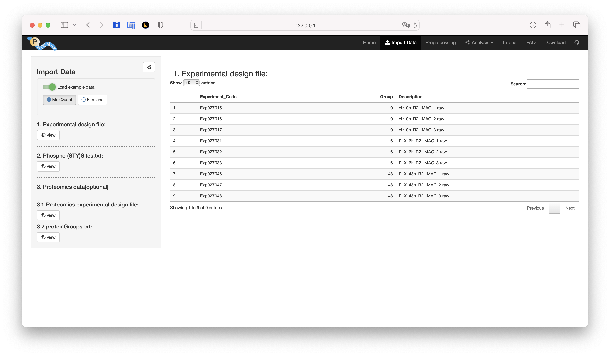
Quality control and merging
Generate merged phosphoproteomics data frame based on peptides files.
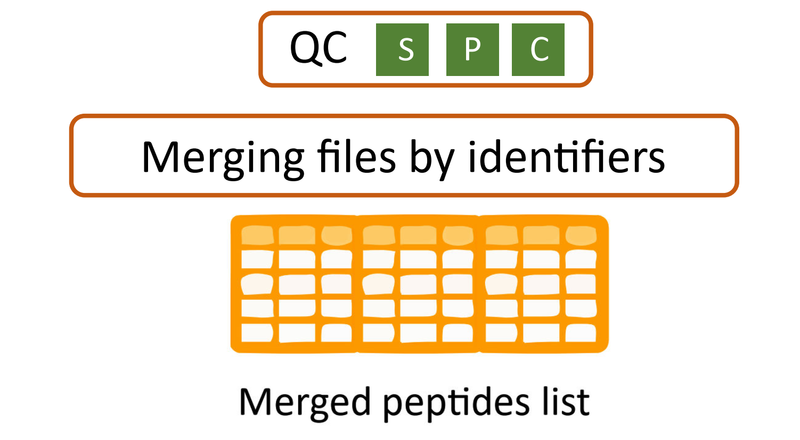
- Go to the ‘Preprocessing’ tab.
- Modify the parameters in Step1 according to your needs.
- Click the running button in Step1 and the file will apear on the right.
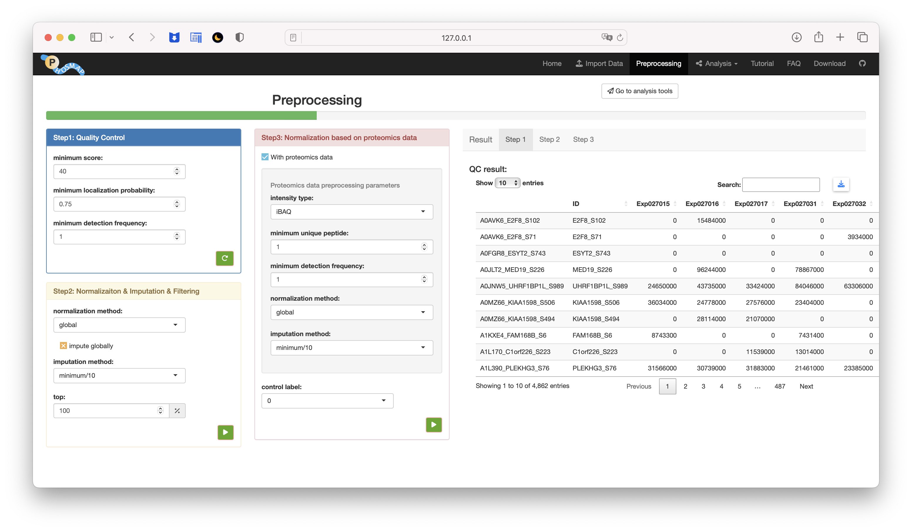
We performed quality control for identified phosphopeptides using PhosMap, those phosphopeptides that met 1% FDR at peptide level and had ion score greater than 20 and the highest confidence probabilities of p-sites computed by Mascot, were kept. We merged phosphopeptides list with quantitative value from all experiments to generate a matrix for analysis.
PhosMap provides two kinds of normalizations, a total sum scaling normalization and normalizing phosphoproteomics data based on proteomics data.
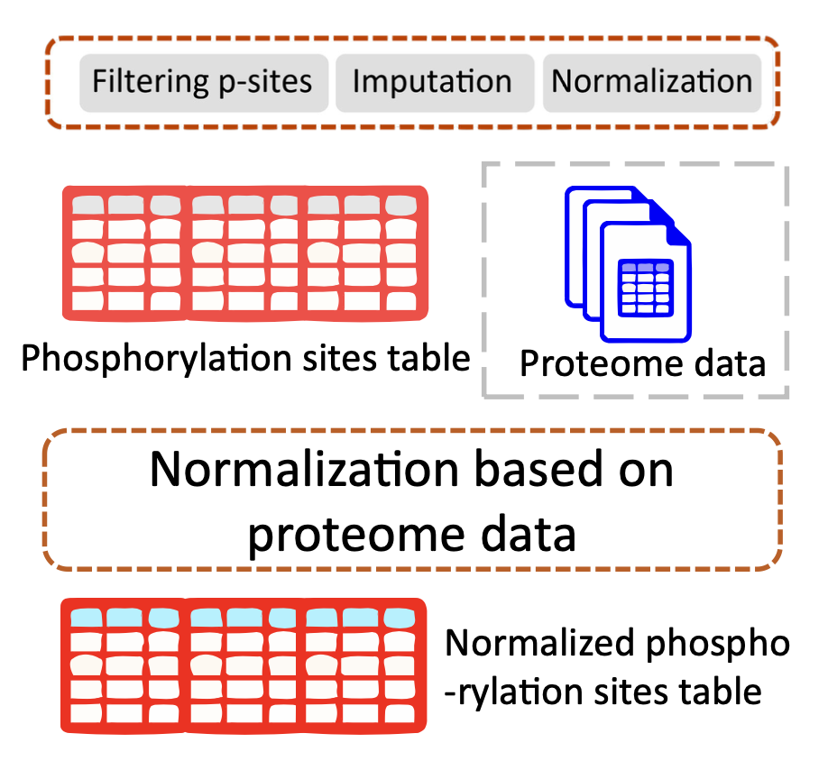
- Go to the ‘Preprocessing’ tab.
- Modify the parameters according to your needs.
- Click the running button in the Step2 and the normalized data of p-sites based on a total sum scaling will apear on the right.
- Click the running button in Step3 and normalized data of p-sites based on proteomics data will apear on the right.
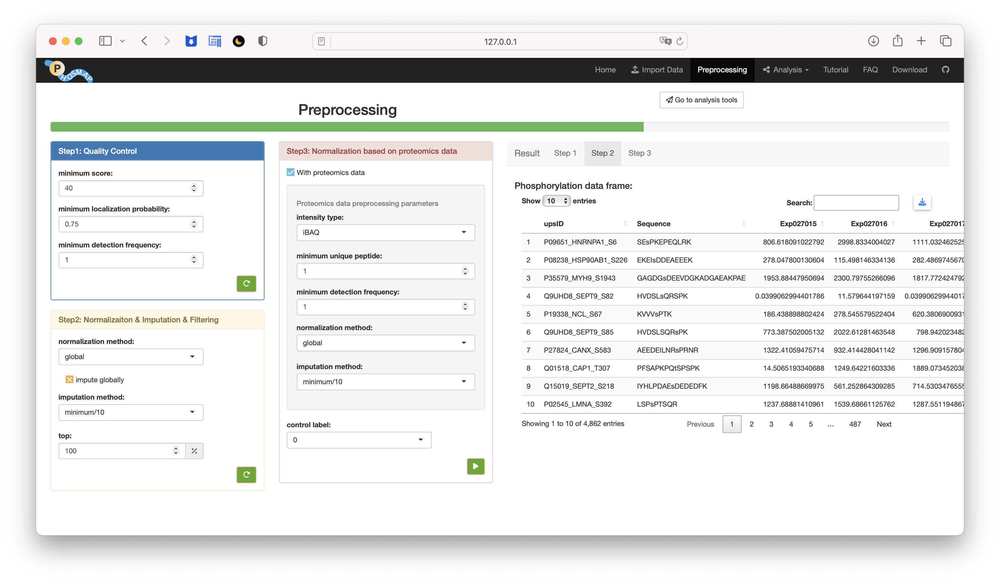
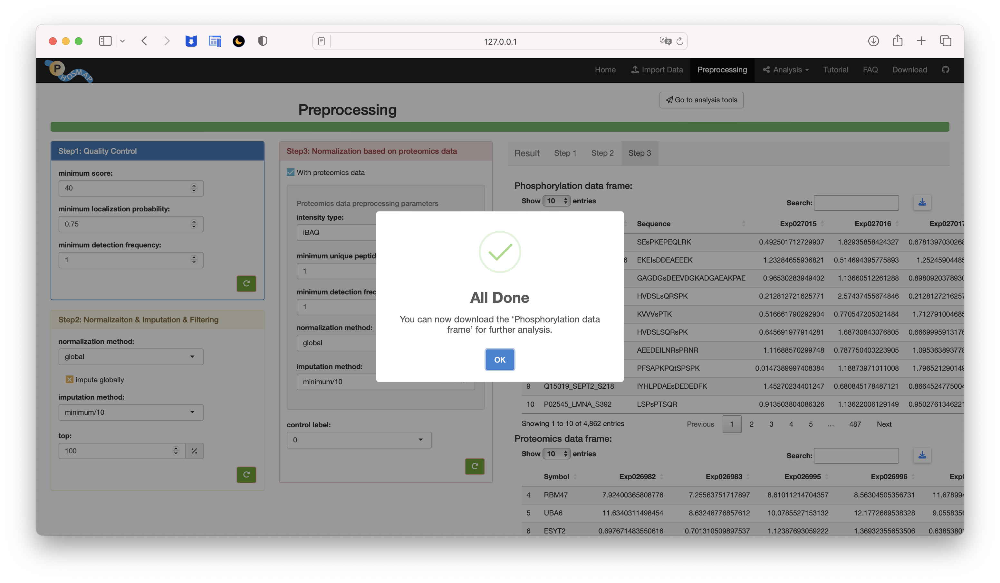
- Go to the ‘Import data’ tab.
- Choose 'Firmiana' to start with data from Firmiana.
- Click ‘Browse’ to upload phosphoproteomics experimental design file in .txt format.
- Zip your Mascot xml files and Phosphoproteomics peptide files, and then upload. The folder tree is shown below. File names of Mascot xml files and Phosphoproteomics peptide files must be consistent with ’Experiment_Code’ of phosphoproteomics experimental design file.
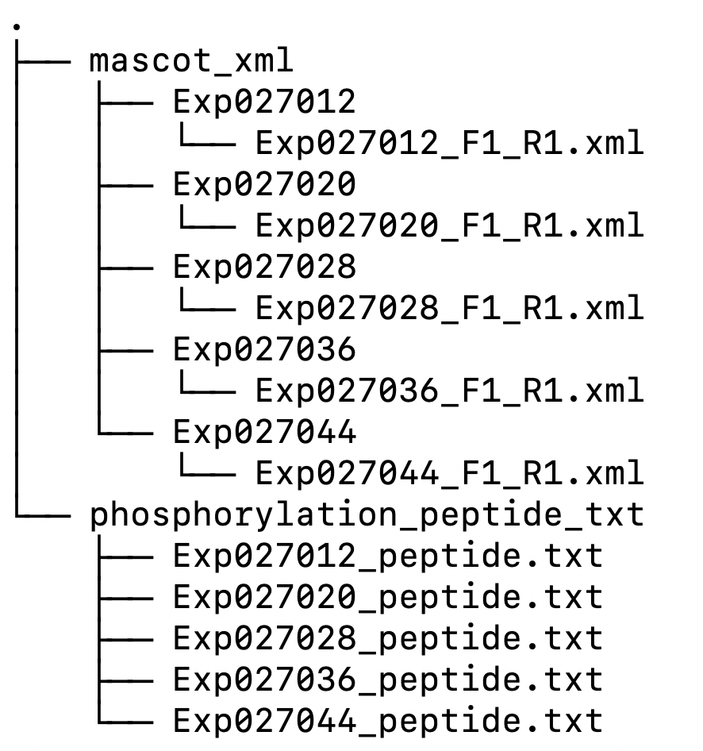
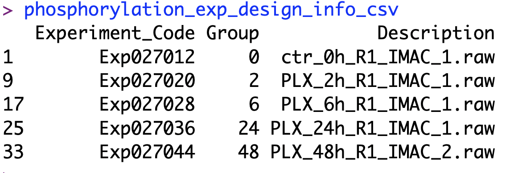
- Proteomics data is optional. Click ‘Browse’ to upload proteomics experimental design file in .txt format. Zip your Profiling_gene_txt and upload. The folder tree is shown below. File names of Profiling_gene_txt must be consistent with ‘Expriment_Code’ of proteomics experimental design file.
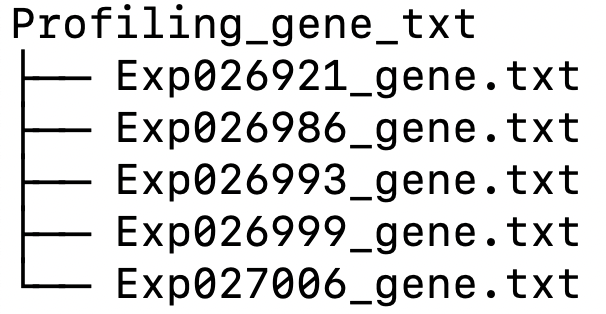
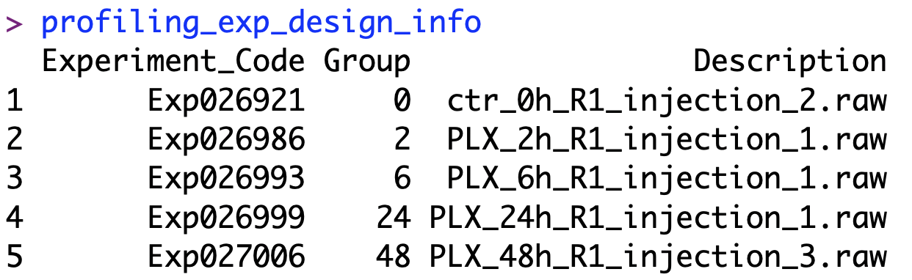
- Uploaded data will be shown in the 'Data Overview' secondary tab.
- You can also choose ‘load exmaple data’ to use exmaple files.
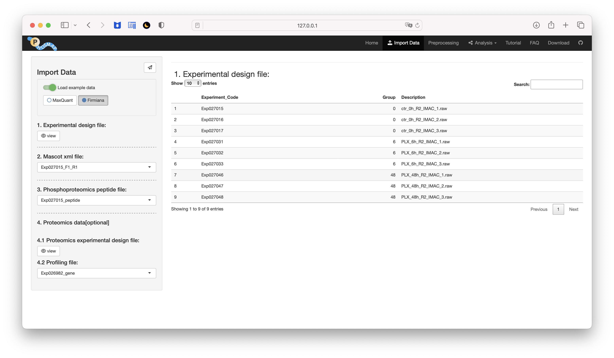
If you start with .xml files from mascot results, you can run this button to parser them to sites score files, based on which .csv files of phosphorylation sites with confidence score will be genereated.
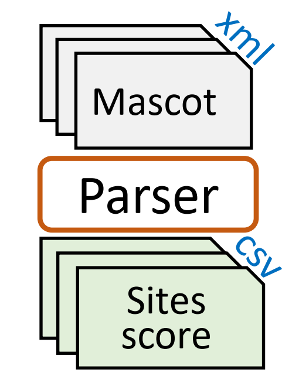
- Go to the 'Preprocessing' tab.
- Click the running button in Step1 and the file will apear on the right.
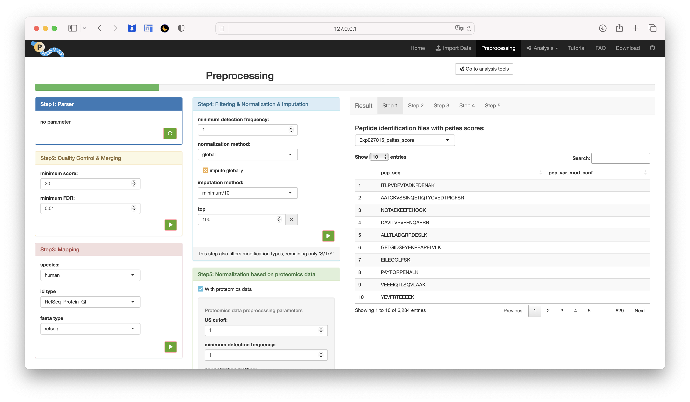
Quality control and merging
Generate merged phosphoproteomics data frame based on peptides files.
- Go to the ‘Preprocessing’ tab.
- Modify the parameters according to your needs.
- Click the running button in Step2 and the file will apear on the right.
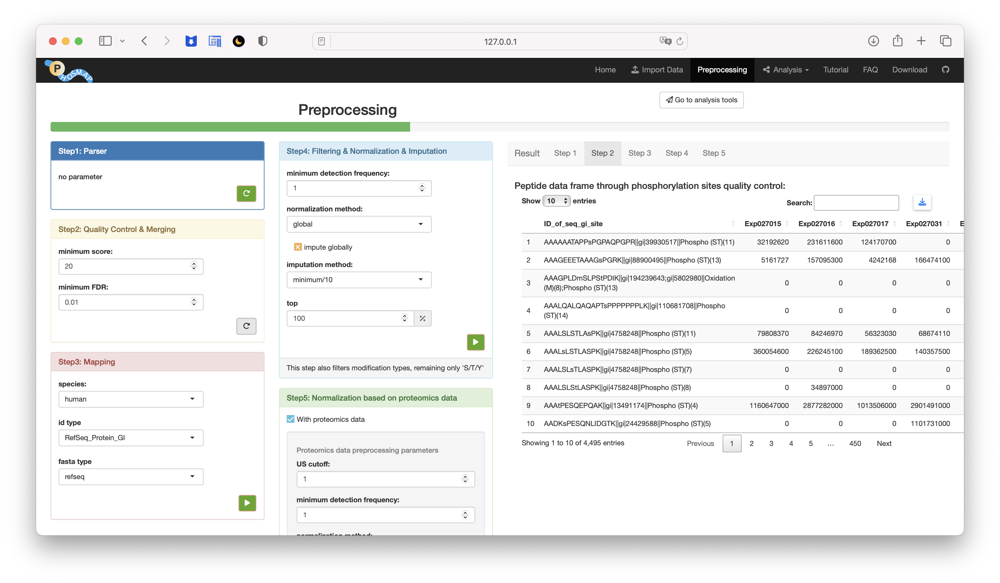
We performed quality control for identified phosphopeptides using PhosMap, those phosphopeptides that met 1% FDR at peptide level and had ion score greater than 20 and the highest confidence probabilities of p-sites computed by Mascot, were kept. We merged phosphopeptides list with quantitative value from all experiments to generate a matrix for analysis.
Mapping protein gi number to gene symbol and outputing expression profile matrix with gene symbol.
Constructing the data frame with unique phosphorylation site for each protein sequence.
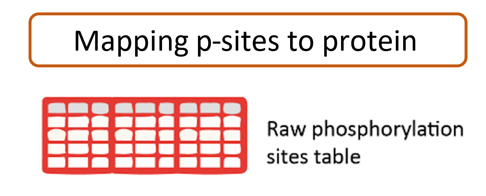
- Go to the ‘Preprocessing’ tab.
- Modify the parameters according to your needs.
- Click the running button in Step3 and the file will apear on the right.
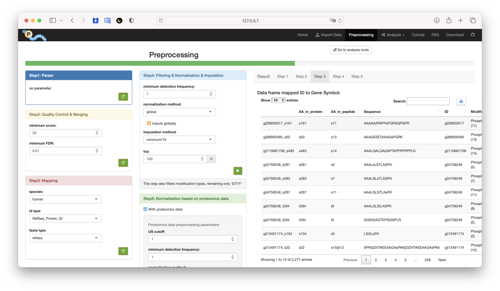
Combining the phosphopeptides sequence, modification position, attached protein ID and the built-in human protein reference database of PhosMap, all p-sites were mapped to the corresponding protein sequence and represented by unique p-sites identifier (upsID) that consisted of a protein GI number/accession, gene symbol and location of the p-site in the protein sequence. In addition, the matched proteome data with phosphoproteome were collected at each time point in Ressa, et al. study. Finally, 3,649 unique p-sites were obtained and their quantitative values were normalized by matched protein profiling data using PhosMap.
PhosMap provides two kinds of normalizations, a total sum scaling normalization and normalizing phosphoproteomics data based on proteomics data.
- Go to the ‘Preprocessing’ tab.
- Modify the parameters according to your needs.
- Click the running button in the Step4 and the normalized data of p-sites based on a total sum scaling will apear on the right.
- Click the running button in Step5 and normalized data of p-sites based on proteomics data will apear on the right.
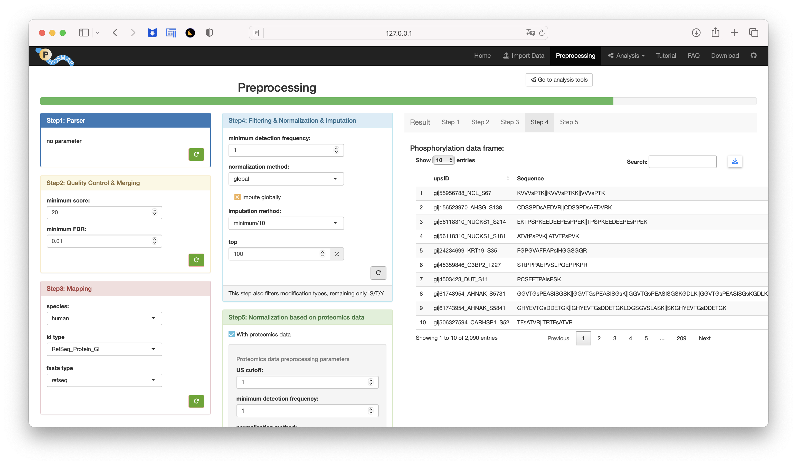
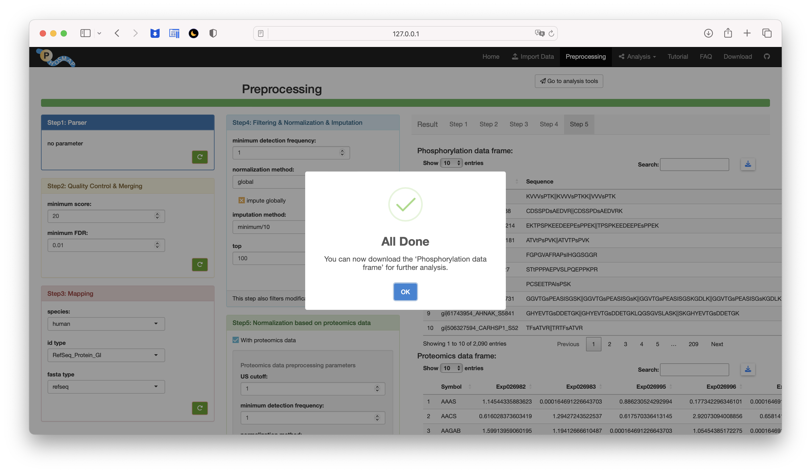
Analysis and visualization
PhosMap incorporated six analysis modules: dimension reduction analysis, differential expression analysis, time course analysis, kinase activity prediction, phosphorylation motif enrichment analysis and survival analysis.
In this step, you can upload your preprocessed data to PhosMap, such as the phosphorylation dataframe. If you have not preprocessed your data, you must preprocess it with PhosMap (go to the ‘Preprocessing’ tab) or do it yourself.
- Go to the 'Analysis Data Upload' under 'Analysis' tab.
- Choose 'example data' or follow the prompts to upload your own corresponding three files.
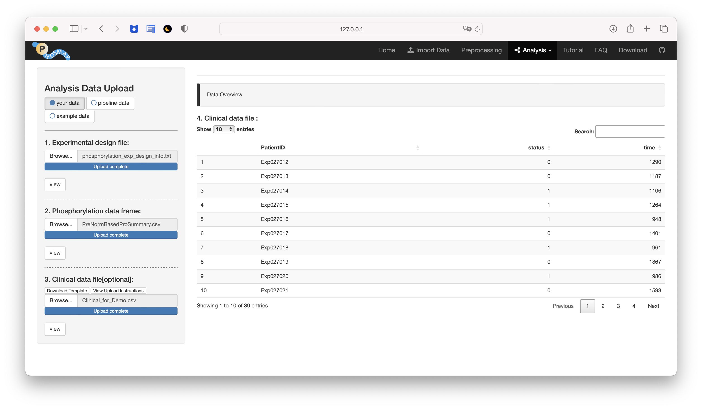
In PhosMap, Dimension reduction analysis methods allowed for PCA, t-SNE and UMAP.
- ‘Title’ refers to the main title of the plot.
- ‘Legend title’ refers to the title of the legend in the plot.
- ‘Random seed’ is a parameter for t-SNE that sets the seed for the random number generator. This can be used to ensure reproducibility of results.
- ‘Perplexity’ is a numerical value for t-SNE, with a default value of 2. It balances the focus between preserving the local and global structure of the data.
- ‘Neighbors’ is a parameter for UMAP that refers to the size of the local neighborhood (in terms of the number of neighboring sample points) used for manifold approximation. Larger values result in more global views of the manifold, while smaller values result in more local data being preserved.
- Go to the 'Dimension reduction analysis' under ‘Analysis’ tab.
- Modify the parameters according to your needs.
- Click the ‘Analysis’ button.
- The PCA, t-SNE and UMAP plot after running will appear on the right.
- Click the download button to download the plot file.
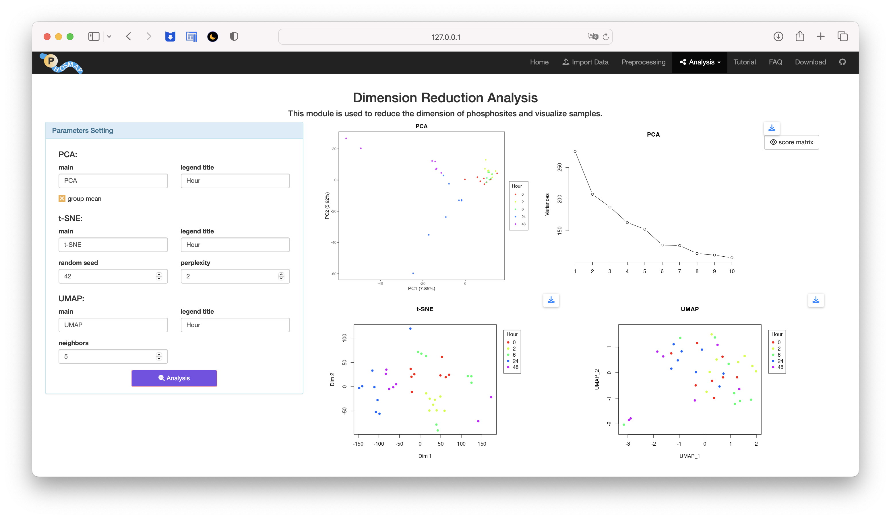
To extract an overview of the effect of the different time course treatments, we performed PCA analysis in the downstream analysis module of PhosMap. We could see that phosphorylation expression profiles of colorectal cancer cells after longer (24h and 48h) vemurafenibin treatment were quite different from those after short treatment (2h and 6h). In addition, it shows that principal component 1 (PC1), with 31.77%, is superior to 20% from original literature and demonstrates phosphorylation expression profile normalized by matched proteomics data has an advantage over representing the variation over time in the BRAFi-treated samples.
In PhosMap, differential expression analysis methods allowed for limma, SAM and ANOVA Data analysis.
-
‘Control’ refers to the control group in the experiment.
-
‘Experiment’ refers to the experimental group in the experiment.
-
‘P-value threshold’ is the threshold for determining statistical significance based on the p-value.
-
‘P-value adjust method’ is the method used to adjust p-values for multiple comparisons.
-
‘FC threshold’ is the fold change threshold for determining significant changes in phosphorylation levels.
-
‘nperms’ is a parameter for the SAM method that specifies the number of permutations to perform.
-
‘Minimum FDR’ is the minimum false discovery rate threshold for determining statistical significance.
-
‘Clustering distance rows’ is a parameter for heatmap generation that specifies the distance metric used for clustering rows.
-
‘Clustering method’ is a parameter for heatmap generation that specifies the clustering method used to cluster rows and columns.
- Go to the 'Differential Expression Analysis' under ‘Analysis’ tab.
- Go to the 'limma', 'SAM' or 'ANOVA' secondary tab.
- Choose Control and Experiment used for differential Expression Analysis.
- Choose 'Interactive mode' and click the 'Analysis’ button. The interactive plot after running will appear on the right.
- Choose 'Static mode' and click the 'Analysis’ button. The static plot after running will appear on the right.
- Click ‘Plot Heatmap’ button. The heatmap will apear in the pop-up window.
- Click the download button to download the plot file.
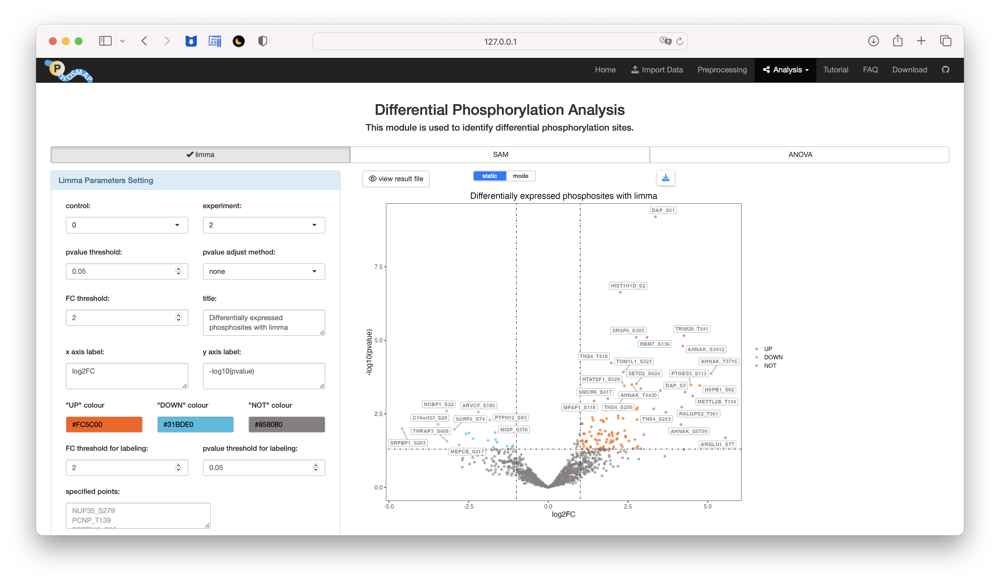
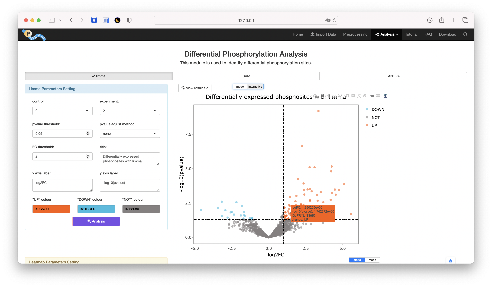
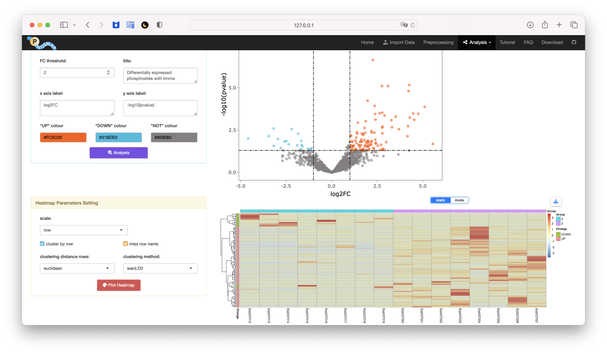
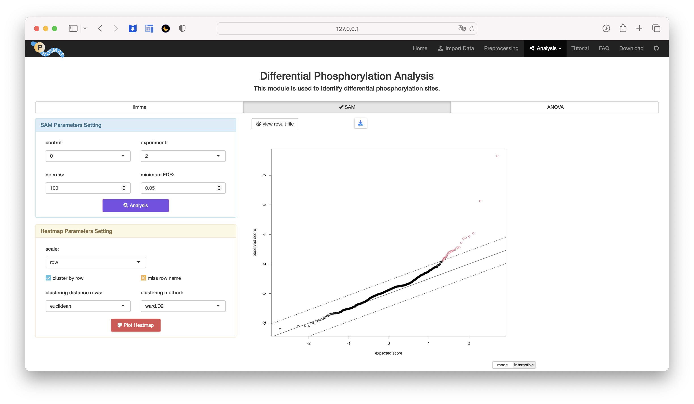
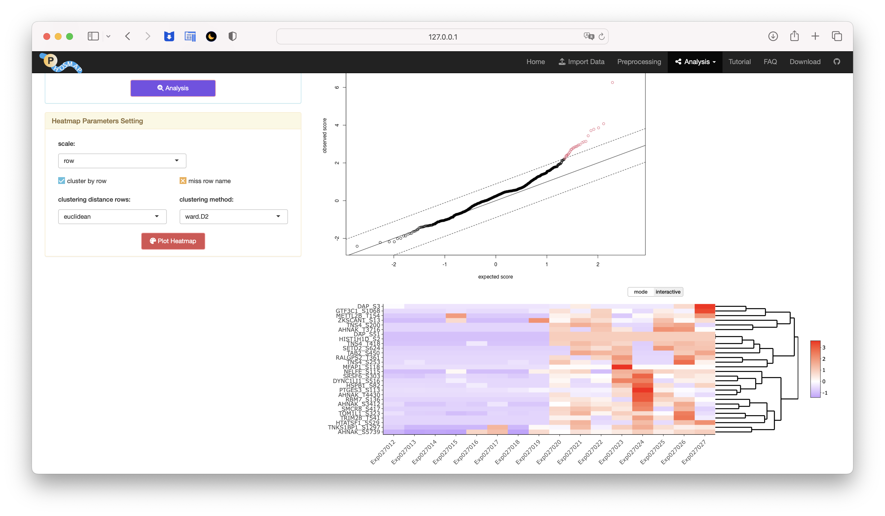
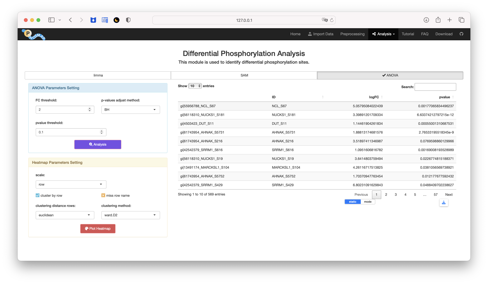
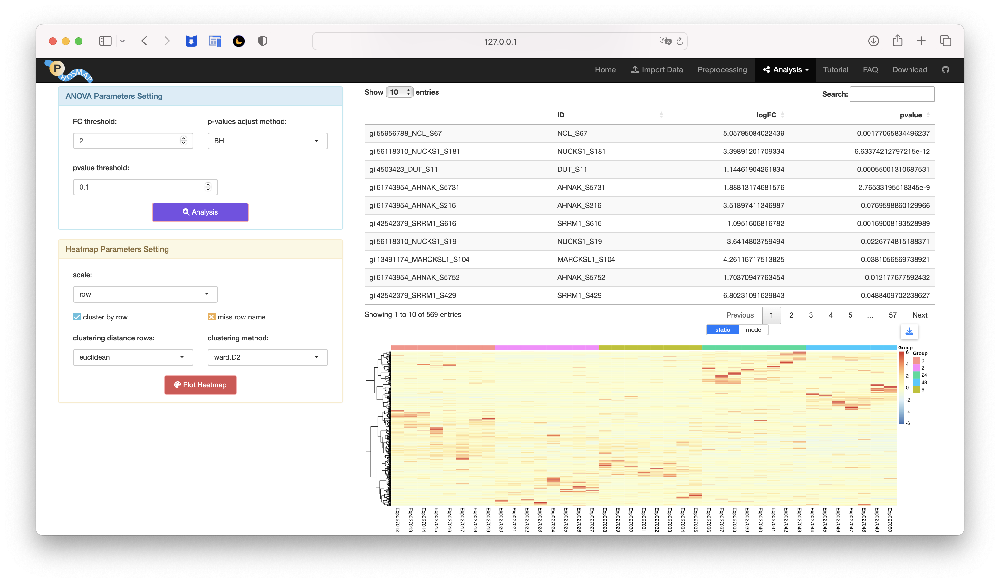
In order to show differential expression analysis between two experimental conditions. We use the limma method integrated into differential expression analysis module of PhosMap to identify 128 significant differently expressed p-sites (DEPs) between the samples with BRAFi-treated for two hours and control samples (P value < 0.05 and fold change > 2). 139 p-sites were up-regulated in the BRAFi-treated samples. The most disparate difference is observed in DAP_S51, whose phosphoserine is related to the MTOR pathway. 99 p-sites were down-regulated in the BRAFi-treated samples.
For the multiple experimental conditions, we leveraged the embedded ANOVA analysis of PhosMap and identified 548 DEPs among the five time points (P value < 0.1 and fold change > 2).
Fuzzy clustering was applied to time course analysis for discovering patterns associated with time points in PhosMap.The corresponding line chart combined with membership for each cluster was also drawn.
- ‘Minimum membership value’ is a threshold for determining the minimum membership value for a data point to be included in a cluster.
- ‘Iteration’ is the number of iterations to perform in the clustering algorithm.
- ‘Number of clusters’ is the number of clusters to generate in the clustering algorithm.
- Go to the ‘Time course Analysis (fuzzy clustering)’ under ‘Analysis’ tab.
- Modify the parameters according to your needs.
- Click the ‘Analysis’ button. The plot after running will appear on the right.
- Click the download button to download the plot file.
These 548 DEPs were used as inputs in the time course analysis module of PhosMap, then 9 strong expression patterns were generated. Two major clusters show significant downregulation at the phosphoproteomics signalling level upon BRAFi treatment in line with the original literature. Cluster 1 responds within 2 hours, an early treatment response. Cluster 2 responds within 24 hours, a late treatment response.
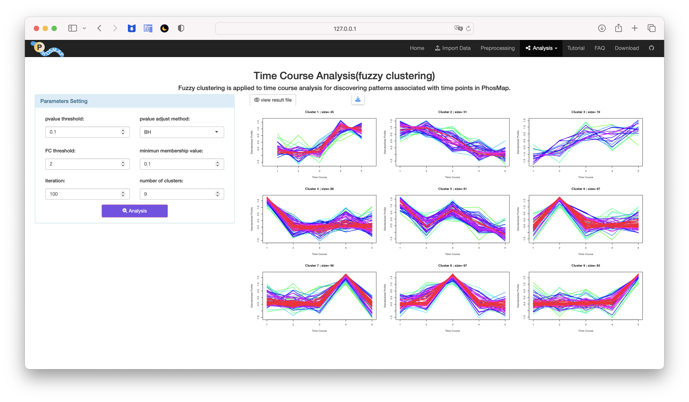
In PhosMap, KSEA was used to predict kinase activity.
- ‘Control’ refers to the control group in the experiment.
- ‘Experiment’ refers to the experimental group in the experiment.
- ‘Species’ refers to the species of the organism being studied.
- ‘Scale’ is a parameter for scaling the data before generating the heatmap.
- ‘Clustering distance rows’ is a parameter for heatmap generation that specifies the distance metric used for clustering rows.
- ‘Clustering method’ is a parameter for heatmap generation that specifies the clustering method used to cluster rows and columns.
- Go to the ‘Kinase-Substrate Enrichment Analysis’ under ‘Analysis’ tab.
- Select ‘Multiple groups’ or ‘Two groups’ according to the number of groups of your data.
- Click the first 'Analysis' button. If ‘Multiple groups’ is selected, after running, the plot will appear on the right. Click ‘view result’ to view and download the kinase prediction time course result. If ‘Two groups’ is selected, only the phoshorylation dataframe will appear on the right.
- Select a cluster if ‘Multiple groups’ is selected. Click the second ‘Analysis’ button. After running, the heatmap will appear on the right.
- Click the download button to download the plot file.
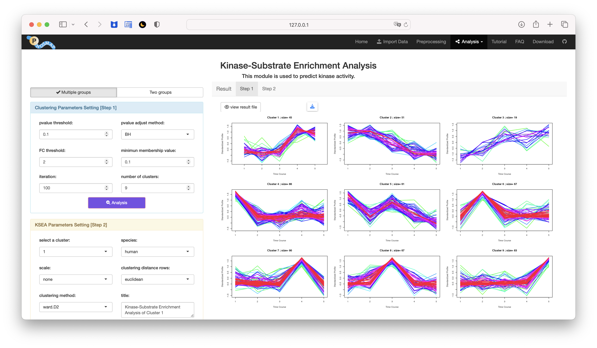
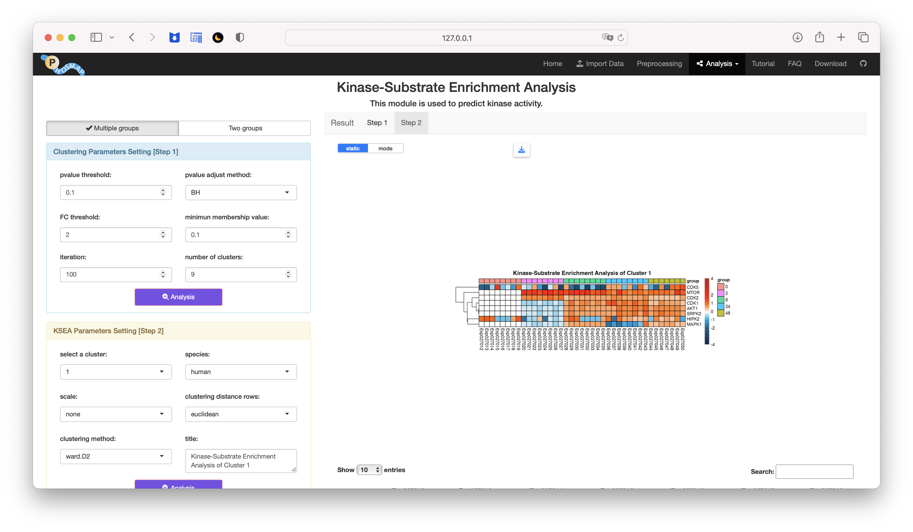
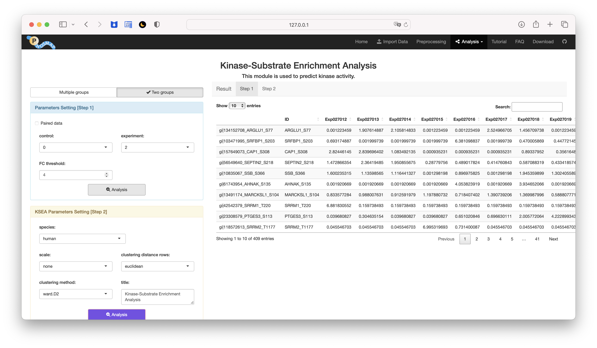
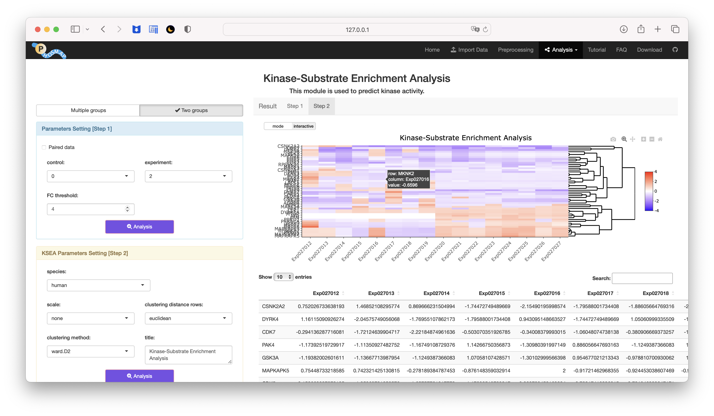
Afterwards, the substrates from the two clusters are imported into the KSEA module of PhosMap to infer kinase activities. The results indicate that CDK1/2, MAPK1/3 and AKT1 are suppressed during BRAFi treatment.
PhosMap allowed for performing MEA on user defined phosphopeptides lists to provide clues for finding candidate kinases that are not present in the database.
- ‘Fasta type’ refers to the type of fasta file used as input for the analysis.
- ‘Selected row number for plotting motif logo’ is the number of rows to be selected for generating the motif logo plot.
- ‘Matched seqs threshold’ is the threshold for determining the minimum number of matched sequences required for a motif to be considered significant.
- ‘Scale’ is a parameter for scaling the data before generating the heatmap.
- ‘Distance metric’ is a parameter for heatmap generation that specifies the distance metric used for clustering rows.
- ‘Clustering method’ is a parameter for heatmap generation that specifies the clustering method used to cluster rows and columns.
- Go to the ‘Motif Enrichment Analysis’ under ‘Analysis’ tab.
- Modify the parameters according to your needs.
- Click the ‘Analysis’ button.
- The foreground dataframe mapped to motifs is shown on the right after running.
- Select row number for plotting logo.
- Click the first ‘Plot’ button, and the logo will appear on the right.
- Modify the parameters below.
- Click the second ‘Plot’ button.
- The heatmap will appear on the right.
- Click the download button to download the plot file.
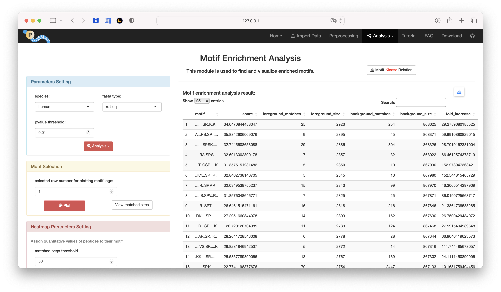
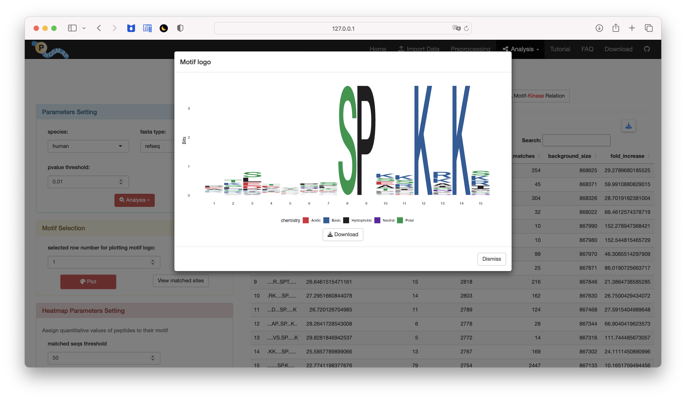
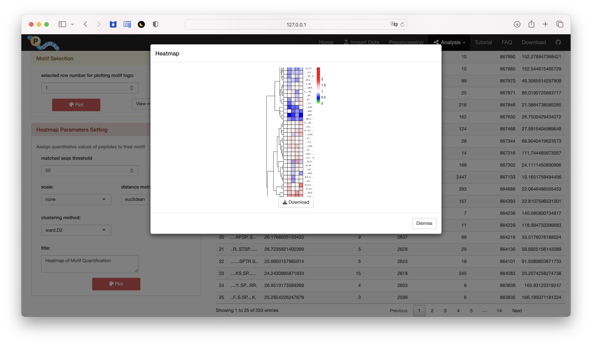
The 3,649 identified phosphor-peptides as foreground sequences are used for MEA of PhosMap and the results further strengthen the evidence of CDK and MAPK pathway deactivation in BRAF mutant CRC cells in response to BRAFi treatment.
This module is used to identify phosphorylation sites or kinases associated with clinical outcomes of patients. Using kinases or phosphorylation locations files and patients’ survival information as input matrices, coxph function from survival R package was used to calculate the hazard ratio (HR) and P-value.
- Go to the ’Survival Analysis’ under ‘Analysis’ tab.
- Modify the parameters according to your needs.
- Click the ‘Analysis’ button.
- The summary dataframe list will appear on the right.
- Click the ‘Plot’ button.
- The plot after running will appear on the right.
- Click the download button to download the plot file.
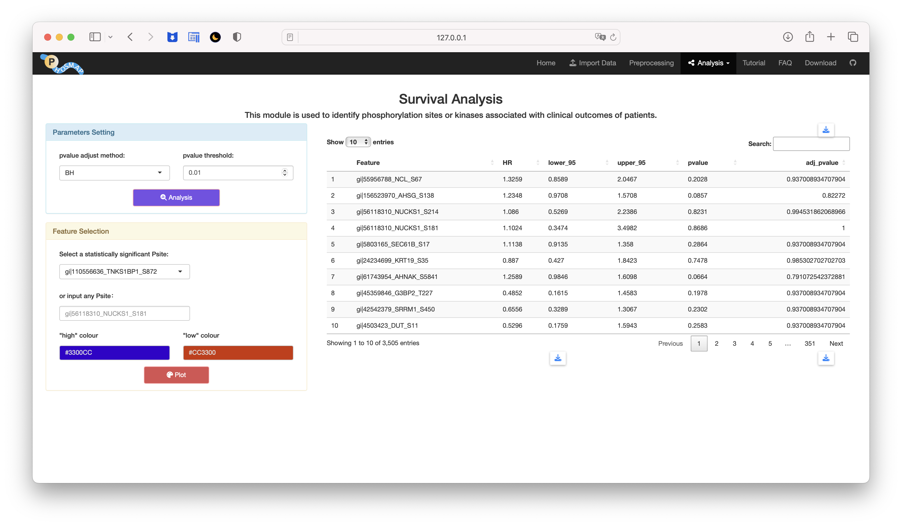
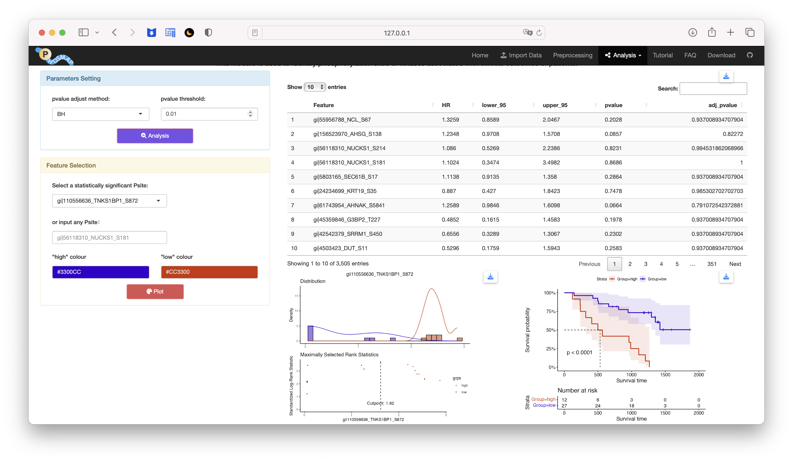
- Feng, J., Ding, C., Qiu, N., Ni, X., Zhan, D., Liu, W., Xia, X., Li, P., Lu, B. and Zhao, Q. (2017) Firmiana: towards a one-stop proteomic cloud platform for data processing and analysis. Nature biotechnology, 35, 409-412.
- Ressa, A., Bosdriesz, E., De Ligt, J., Mainardi, S., Maddalo, G., Prahallad, A., Jager, M., De La Fonteijne, L., Fitzpatrick, M. and Groten, S. (2018) A system-wide approach to monitor responses to synergistic BRAF and EGFR inhibition in colorectal cancer cells. Molecular & Cellular Proteomics, 17, 1892-1908.